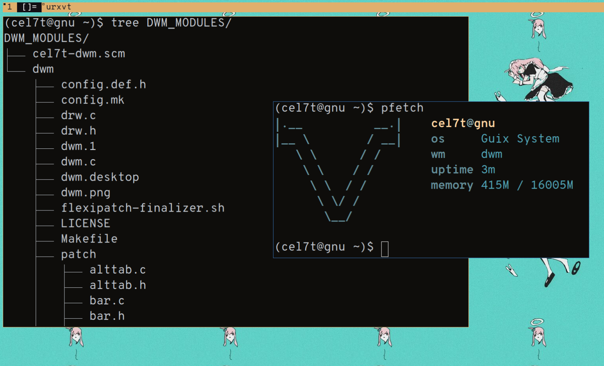

If like me you use a lot of patches with dwm, you probably use dwm-flexipatch for configuring dwm. You probably also have an existing build of dwm with a lot of customizations in config.def.h. Research online might lead you to the conclusion that you need to set up a git repository and a guix channel with your dwm folder to make it work, but that's not necessary at all. In this post I'll go over how I got my dwm-flexipatch build to work on GNU Guix without any of that.
We want to start by making a directory for our dwm folder and build file.
mkdir DWM_MODULE
Next, copy your dwm folder here.
cp -r /path/to/dwm DWM_MODULE/
Now, this step is very important:
run make clean once in the dwm folder, otherwise guix will run into a RUNPATH error during the build phase.
cd DWM_MODULE/dwm make clean cd ..
And finally, inside the DWM_MODULE directory create a file named USER-dwm.scm, where USER can be your username or anything else.
Then put this in the file:
(define-module (USER-dwm)) (use-modules (gnu packages suckless) (gnu packages xorg) (gnu packages image) (guix gexp) (guix packages)) (define-public USER-dwm (package (inherit dwm) (name "USER-dwm") (inputs (modify-inputs (package-inputs dwm) (append libxcb) (append imlib2))) (source (local-file "dwm" #:recursive? #t)))) USER-dwm
Here I have added libxcb and imlib2 to inputs as I have patches requiring them.
If you are using a patch requiring some other library, you can add it by putting another (append libname) statement in the modify-inputs expression.
The source expression searches for a folder named dwm in the file's pwd and uses its contents as the package's source.
Running guix package -f USER-dwm.scm will now install your flexipatched dwm.
If you want to add this to your system configuration, modify your config.scm like this:
(use-modules (USER-dwm) ...) (operating-system ... (packages (list USER-dwm ...)))
And now, reconfigure the system with the following command:
guix system reconfigure /path/to/config.scm -L $HOME/DWM_MODULE
If you don't want to run the reconfigure command with -L every time, add $HOME/DWM_MODULE to GUIX_PACKAGE_PATH.
Here's a customary screencap: 